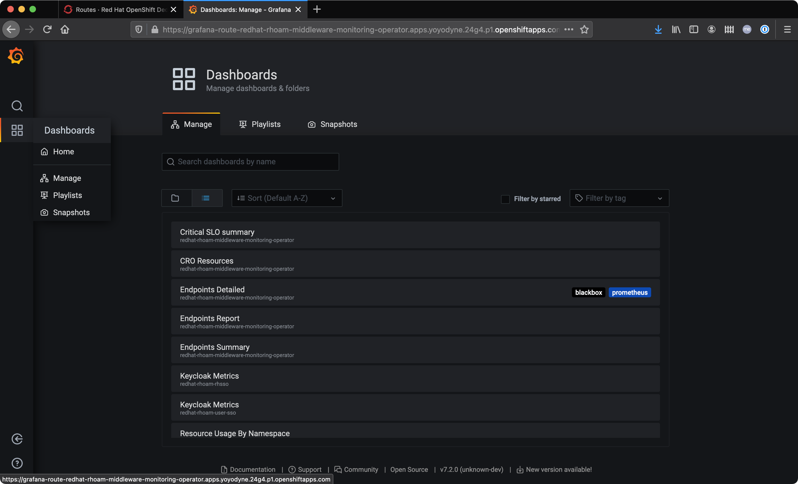
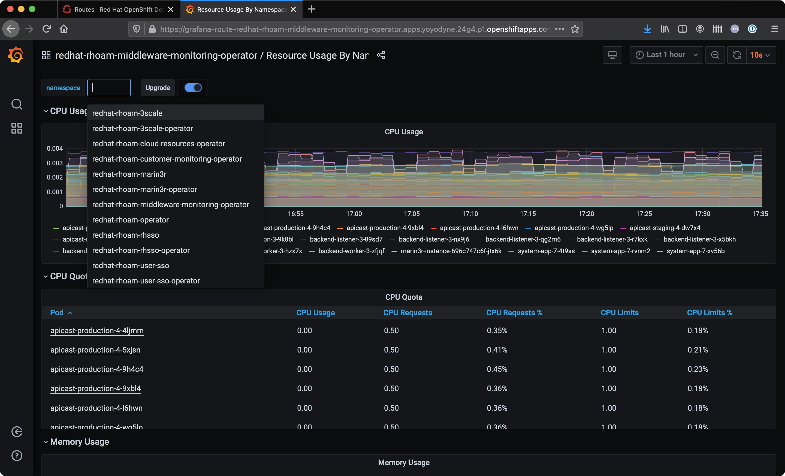

Red Hat OpenShift API Management 3scale and OpenShift Dedicated Cluster Monitoring
Both Red Hat OpenShift API Management and OpenShift Dedicated include a monitoring stack out of the box.
|
Monitoring resources can only be viewed by OpenShift user accounts that have dedicated-admin or cluster-admin permissions. |
Accessing the Middleware Monitoring Stack
-
Navigate to the OpenShift Dedicated console for your cluster and login as a dedicated-admin user.
-
Select the Administrator perspective from the side-menu.
-
Expand the Networking entry in the side-menu and select Routes.
-
Choose the
redhat-rhoam-middleware-monitoring-operatorfrom the Project dropdown. -
The following routes should be listed, similar to the screenshot.
-
Grafana
-
Prometheus
-
Alertmanager
-
Accessing the Grafana Dashboards
-
Click the URL that corresponds to the Grafana service.
-
A new browser tab will open and prompt you to login using OpenShift OAuth. Click the Log in with OpenShift button.
-
Authenticate using your configured IdP.
-
Authorize the account permissions request by choosing Allow selected permissions.
You should be redirected to a Grafana instance homepage after successfully authenticating and authorizing account access.
-
Hover over the tile icon on the left and select Manage.
-
Select the List view icon.
All the dashboards that are available to you should be listed, similar to the following image.

The Critical SLO summary dashboard provides the viewer with information relating to Service Level Objectives. Specifically, it indicates the availability of RHOAM components within the overall SLA agreement a 28 day period.
The CRO Resources dashboard provides a view of CPU and Memory metrics, and the status of underlying cloud resources. Postgres and Redis are two such cloud resources, and are provided by the underlying cloud vendor, e.g AWS ElastiCache for Redis.
Viewing Managed Service Resource Usage
-
Open the OpenShift Dedicated console for your cluster and login as a dedicated-admin user.
-
Navigate to the Routes screen in the redhat-rhoam-middleware-monitoring-operator Project.
-
Open the Grafana Route and navigate to the dashboards list.
-
Select the Resource Usage by Namespace dashboard.
-
Click the namespace dropdown.
 -
Choose the redhat-rhoam-3scale entry.
This view can be used to monitor CPU and Memory usage by APIcast, Zync, and other 3scale API Management Pods.
Viewing Managed Service Resource Usage as a Fraction of Cluster Totals
To view the resource usage of the Managed Service components with respect to overall cluster resource usage/availability:
-
Open the OpenShift Dedicated console for your cluster and login as a dedicated-admin user.
-
Navigate to the Routes screen in the redhat-rhoam-middleware-monitoring-operator Project.
-
Open the Grafana Route and navigate to the dashboards list.
-
Select the Resource Usage for Cluster dashboard.